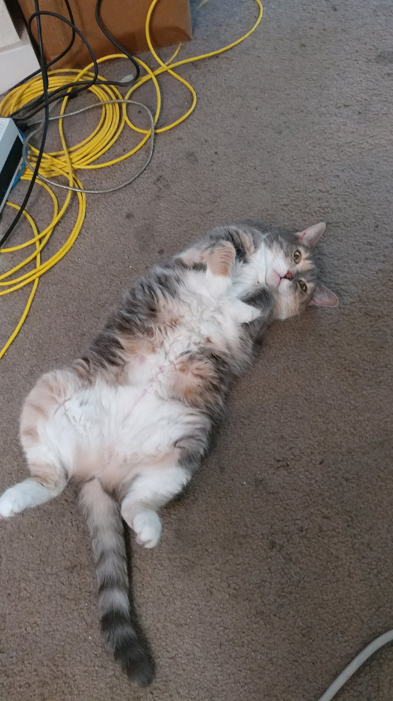
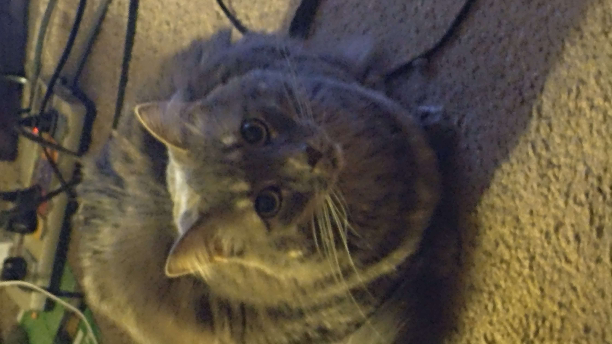

This is my cat ghost super silly and lovable~
Omi is the oldest cat my dad has had her since before I was born but she's always protected and loved me the most as a baby and even now (if ya wanna hear some interesting stories just ask)

she really doesnt like new people and in fact tries to hide and if your around enough she'll stalk you